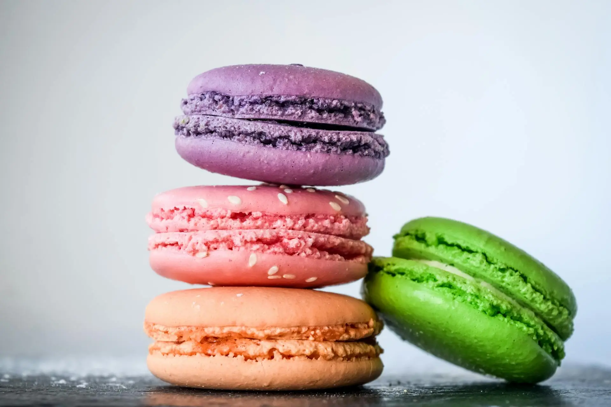
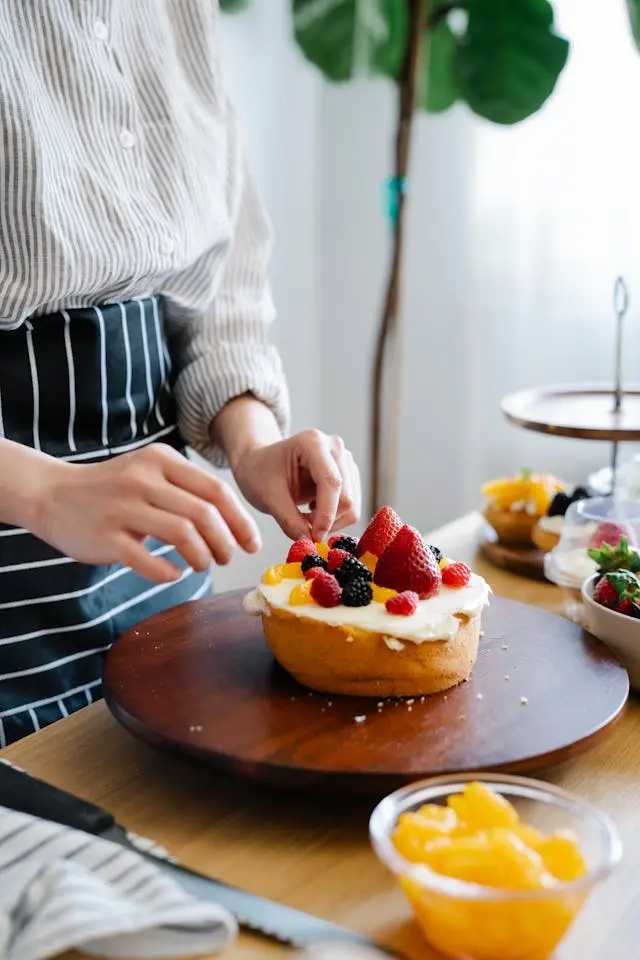

welcome
Welcome to Sweet Creation By Liss, where every dessert is crafted to make your moments sweeter and unforgettable!

HI! I'M LISS
Sweet Creation by Liss is brought to life by a passionate young baker from Nueva Guinea, Nicaragua. With a love for
creating beautiful and delicious cakes, she pours her heart and skill into every order.
From the aroma of
fresh-baked treats to the artistry of custom decorations, her work is all about sharing joy through flavor and
design. Each cake is not just a dessert—it’s a dream crafted for your special moments.